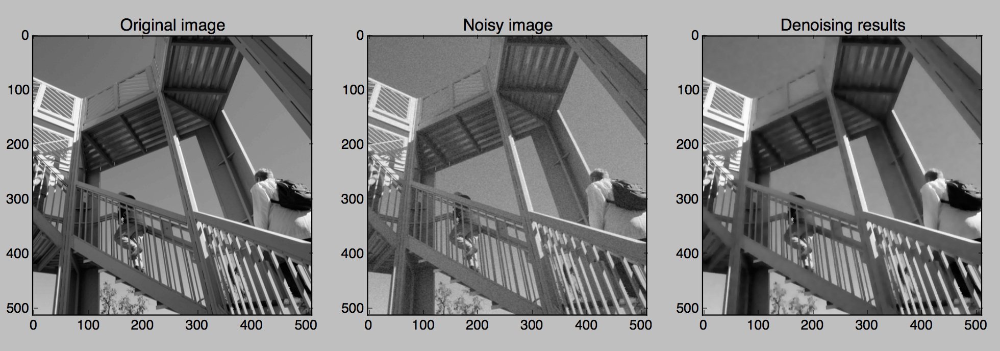
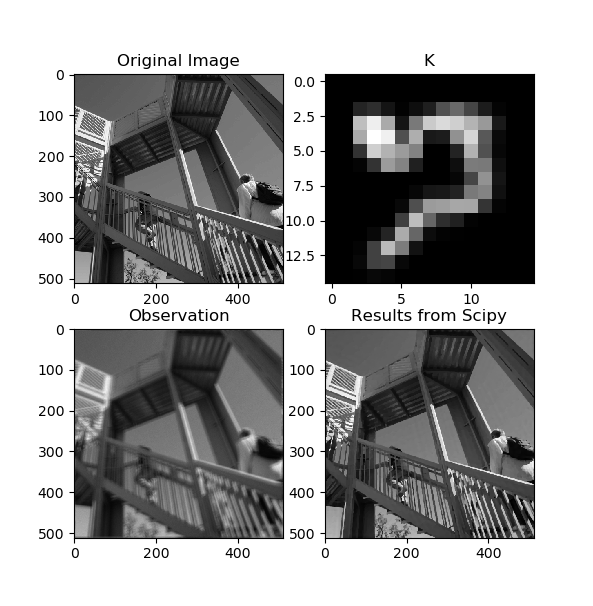

Examples¶
These examples show many different ways to use ProxImaL. The Basic examples section shows how to solve some common optimization problems in ProxImaL. The Advanced examples and Real-world applications sections contains more complex examples aimed at experts in convex optimization.
Basic examples¶
Total variation denoising¶
Signal distortion model:
Textual representation in ProxImaL:
prob = Problem(
sum_squares(u - b / 255) + .1 * norm1(grad(u)) + nonneg(u))
Example code: https://github.com/comp-imaging/ProxImaL/blob/master/proximal/examples/basic_denoise.py
Expected output:
TV-regularized image deconvolution¶
Signal distortion model:
Textual representation in ProxImaL:
prob = Problem(
sum_squares(conv(K, u, dims=2) - b) +
lambda_tv * group_norm1(grad(u, dims=2), [2]),
)
Example code: https://github.com/comp-imaging/ProxImaL/blob/master/proximal/examples/test_deconv.py
Expected output:
Total variation denoising with multiplicative Poisson noise¶
Signal distortion model:
Textual representation in ProxImaL:
prob = Problem([
poisson_norm(conv(K, u), b),
lambda_tv * group_norm1(grad(u, dims=2), [2])
])
Example code: https://github.com/comp-imaging/ProxImaL/blob/master/proximal/examples/test_poisson.py
Expected output:
Advanced examples¶
Horn-Schunck optical flow algorithm¶
Signal distortion model:
Textual representation in ProxImaL:
prob = px.Problem([
alpha * px.sum_squares(px.grad(u)),
alpha * px.sum_squares(px.grad(v)),
px.sum_squares(px.mul_elemwise(fx, u) + px.mul_elemwise(fy, v) + ft,),
])
Example code: https://github.com/comp-imaging/ProxImaL/blob/master/proximal/examples/test_optical_flow.py
Expected output:
Image deconvolution with spatial varying point spread functions (SV-PSFs)¶
References: Denis, L., Thiébaut, E., Soulez, F. et al. Fast Approximations of Shift-Variant Blur. Int J Comput Vis 115, 253–278 (2015). https://doi.org/10.1007/s11263-015-0817-x
Signal distortion model:
Textual representation in ProxImaL:
grad_term = grad(u)
prob = Problem([
sum_squares(
sum([
conv(psf_modes[..., i], mul_elemwise(weights[..., i], u))
for i in range(n_psf)
]) - raw_image
),
lambda_tv * alpha * group_norm1(grad_term, group_dims=[2]),
lambda_tv * (1.0 - alpha) * sum_squares(grad_term),
])
Example code: https://github.com/comp-imaging/ProxImaL/blob/master/proximal/examples/test_deconv_sv_psf.py
Expected output:

Real-world applications¶
Phychographical phase retrieval
Bayer filter de-interleaving of raw images
Pulse calling of single-molecule events¶
Reference: Brian D. Reed et al., Real-time dynamic single-molecule protein sequencing on an integrated semiconductor device. Science 378, 186-192(2022). DOI: https://doi.org/10.1126/science.abo7651
Subset of raw data retrieved on July 16, 2023, from https://zenodo.org/records/6789017 .
Warning
The original pulse-recovery method was designed for a streaming processor architecture, likely optimized for reconfigurable hardware having fixed-point arithmetic such as FPGAs. The convex-optimization approach implemented here instead processes data in batches of roughly 30,000 samples and is better suited to GPU execution having single/half-precision floating point arithmetic. Batch-based processing may introduce boundary artifacts, reflecting a trade-off inherent to this non-streaming formulation.
Signal distortion model:
Textual representation in ProxImaL:
prob = Problem(
sum_squares(u - (b - 20.0) / 255.0) + 0.4 * norm1(grad(u)) + nonneg(u))
Example code: https://github.com/comp-imaging/ProxImaL/blob/master/proximal/examples/test_pulse_calling.py
Expected output:

Pixel super-resolution of oil emulsion droplets under high-speed camera¶
References: A.C.S. Chan, H.C. Ng, S.C.V. Bogaraju, H.K.H. So, E.Y. Lam, and K.K. Tsia, “All-passive pixel super-resolution of time-stretch imaging,” Scientific Reports, vol. 7, no. 44608, 2017. DOI: http://dx.doi.org/10.1038/srep44608.
Note
The original pixel super-resolution algorithm is meant for a streaming processor architecture, likely optimized for reconfigurable hardware having fixed-point arithmetic such as FPGAs. The convex-optimization approach implemented here instead processes data in batches of roughly 1000 raster scan lines, and is better suited to GPU execution having single/half-precision floating point arithmetic. Batch-based processing may introduce boundary artifacts, reflecting a trade-off inherent to this non-streaming formulation.
Refer to the following article for the baremetal FPGA implementation: Shi R, Wong JSJ, Lam EY, Tsia KK, So HK. A Real-Time Coprime Line Scan Super-Resolution System for Ultra-Fast Microscopy. IEEE Trans Biomed Circuits Syst. 2019 Aug;13(4):781-792. doi: https://doi.org/10.1109/TBCAS.2019.2914946.
Raw data: http://academictorrents.com/details/a8d14f22c9ce1cc59c9f480df5deb0f7e94861f4
Signal distortion model:
Textual representation in ProxImaL:
prob = Problem(
sum_squares(
mul_elemwise(
mask,
warp(
pad(u + u_0, b.shape),
M,
),
)
- b
) +
5e-3 * group_norm1(grad(u), group_dims=[2]),
)
Example code: https://github.com/comp-imaging/ProxImaL/blob/master/proximal/examples/test_pixel_sr.py
Warning
Illumination background extraction for u_0 via the one-dimensional
Pixel-SR method (aka the equivalent time sampling method), is omitted here for the
sake of demonstration.
Expected output:
Raster scan lines captured and digitized at 5 Giga-Sample/second.¶
Reconstructed oil emulsion droplets in the microfluidic channel, at the linear velocity of 0.3 meter/second and a droplet generation rate of 5,800 Droplet/s.¶